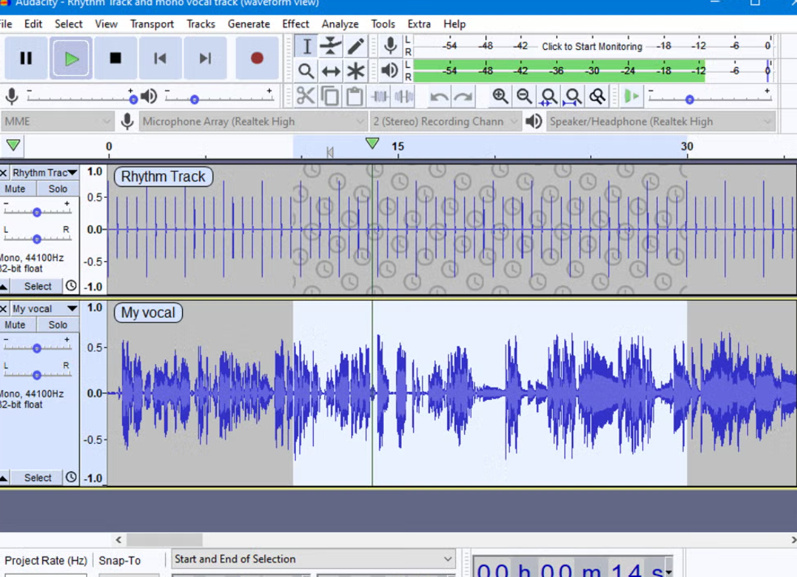

Audacityは無料で利用できる定番の音声編集ソフトです。 録音した音声の編集やノイズ除去、音量調整などができ、ポッドキャストや動画編集の音声作成にも活用されています。 無料ながら高機能で、多くのクリエイターに利用されている人気ソフトです。

公式サイトから無料でダウンロードできます。
★★★★★
無料で音声編集を始めたい人におすすめの定番ソフトです。 録音や編集に必要な機能が一通り揃っており、初心者から上級者まで幅広く利用できます。 ポッドキャストや配信、動画制作にも活用できる便利なツールです。
更新日：2026-06-24